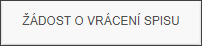
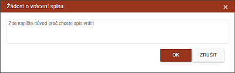

Žádost o vrácení spisu
IP může požádat o vrácení spisu zpět do svého portfolia.

Pro vrácení spisu je třeba spis označit a stisknout akční tlačítko. Otevře se dialog a v něm uživatel musí zadat svůj důvod či vysvětlení k vrácení spisu.

Tato informace jde k supervizorovi. Ten jí může akceptovat a vrátí spis, který se uloží buď do záložky Osobní návštěvy a nebo do záložky Ke zpracování. Vrácení spisu ale může být zamítnuto a spis bude po určité době z této záložky odstraněn.